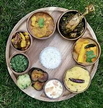
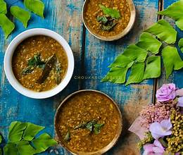
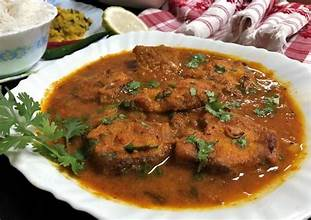
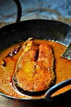
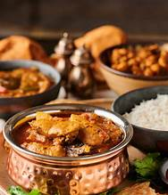
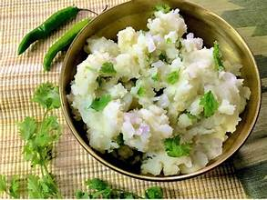
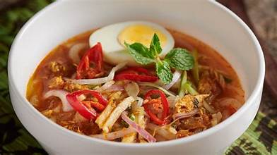
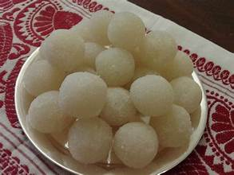
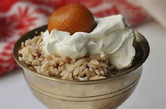

FOOD VARIETIES
🍚 Staple Dishes & Rice Varieties

Assam Thali – A wholesome platter with rice, dal, fish curry, and a variety of side dishes.
Khar – A signature Assamese dish made from raw papaya, pulses, and alkaline water from banana ash.


Masor Tenga – A tangy and light fish curry prepared with tomatoes and lemon.
Xaak Aru Bhaji – A nutritious dish made with fresh green leafy vegetables, lightly spiced.

🥘 Signature Curries & Meat Delicacies
Doi Maach – Fish cooked in a rich yogurt-based gravy, a delicacy enjoyed during special occasions.


Patot Di Maas – Fish marinated with mustard and spices, steamed in banana leaves.
Pork with Bamboo Shoots – A smoky and flavorful dish with pork cooked with fermented bamboo shoots.


Murgir Jhol – A simple and flavorful chicken curry made with minimal spices and herbs.
🥗 Savory Snacks & Sides

Aloo Pitika – Mashed potatoes mixed with mustard oil, onions, and green chilies.
Pitha – A traditional rice cake filled with sweet or savory fillings, enjoyed during Bihu celebrations.


Poita Bhat – Fermented rice soaked overnight and served with mustard oil and onions.
Assam Laksa – A tangy noodle soup infused with fish and tamarind flavors.

🍮 Sweet Treats & Desserts
Payas – A creamy rice pudding made with milk, sugar, and cardamom, served during festivals.


Til Pitha – A traditional sweet made with rice flour and sesame seed filling, popular during Magh Bihu.
Narikol Laru – Coconut laddoos made with jaggery and grated coconut.

🥤 Refreshing Beverages
Jolpan – A traditional breakfast made from a mix of soaked rice, yogurt, and jaggery.


Xaj Pani – A traditional rice beer brewed by the Ahom community, enjoyed during festivities.